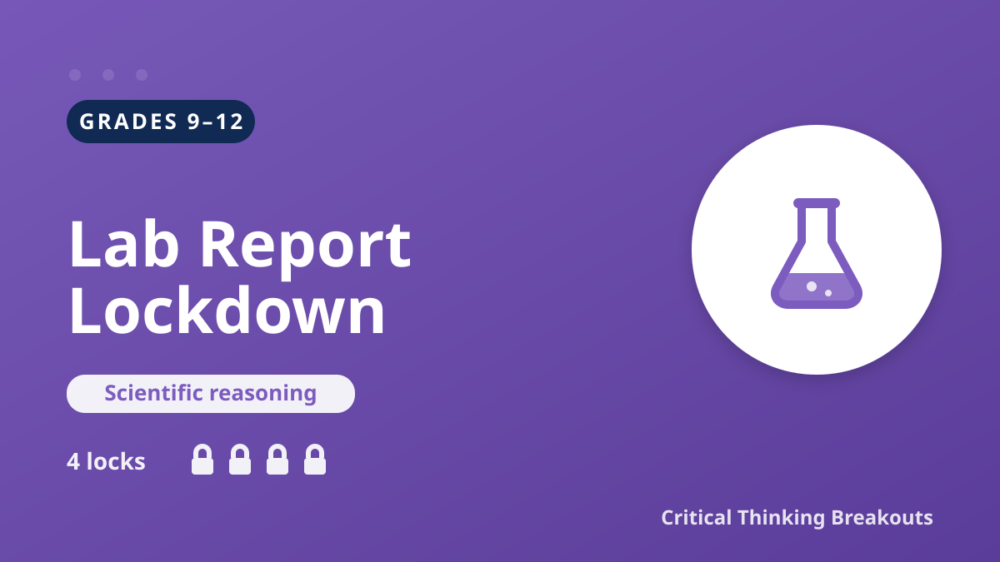

Scientific reasoning · Grades 9–12

Premise: A company's self-funded "miracle drink" study claims it makes students smarter. Students audit it for peer review — catching the tiny sample, the missing control group, the correlation-causation leap, and the conflict of interest.
Students open the clue board, examine the evidence, and solve four locks (a sample-size lock, a control-group lock, a reasoning-flaw word lock, and an evidence-strength order lock). Each lock reveals a short reasoning explanation when solved. The answer key is not shown on this page.
▶ Open Student BreakoutBuilds scientific skepticism and argument-evaluation skills across science and ELAR standards:
ELA 9–12.8/9 analyze and evaluate the validity and reliability of an argument and its evidence.